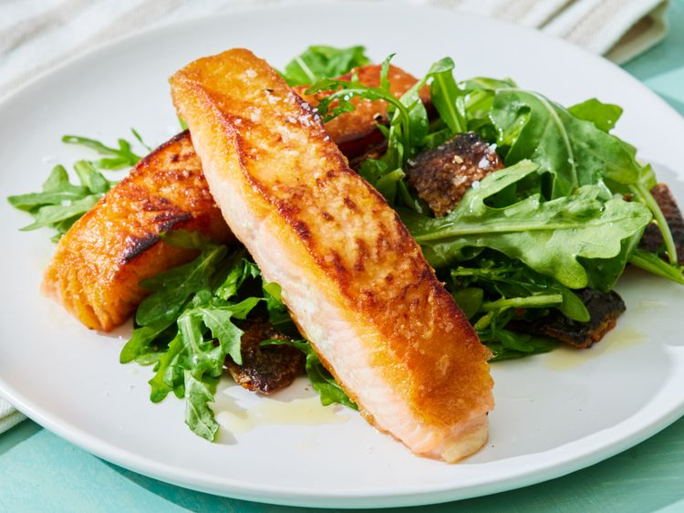

Pan-fried salmon
Home

Pan-fried salmon
Ingredient:
- 2 (3 ounce) fillets salmon, with skin
- Sea salt to taste
- 2 tablespoons olive oil
Directions:
- Gather all ingredients. Rinse salmon fillets and pat dry thoroughly with paper towels; season with sea salt.
- Heat olive oil in a large skillet over medium-high heat.Cook salmon fillets, skin-side up, in hot oil until flesh is golden brown, 5 to 7 minutes; flip and continue cooking until skin is slightly browned, about 5 minutes more.
- Use a slotted spatula to remove salmon, leaving drippings in the skillet.
- Remove skin from salmon; fry skin in drippings in the skillet until crispy, 2 to 3 minutes.
- Serve crispy skin with salmon.